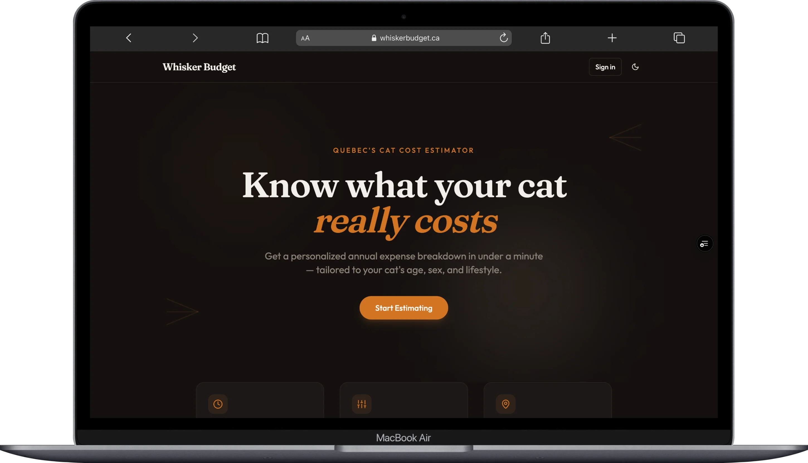
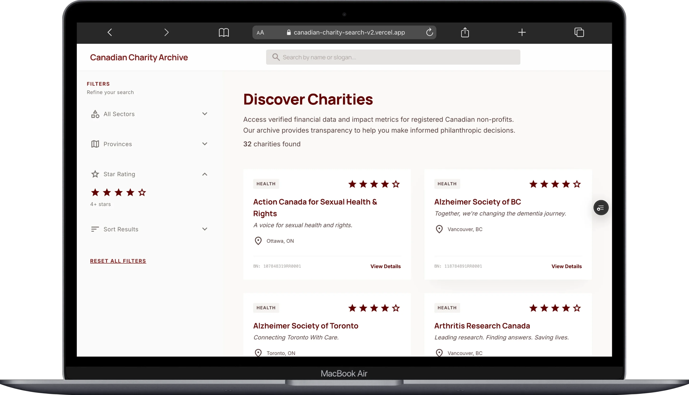
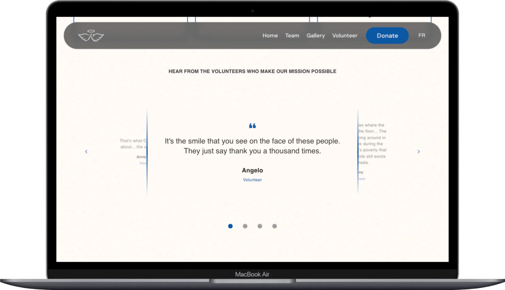

Ingénieure Support · Développeuse Full-Stack · Saint-Hyacinthe, QC
Jessica Iacovozzi
Défiler pour explorer
Je sais ce que ça fait quand quelque chose casse. Maintenant, j'apprends comment le réparer.
Je suis une ingénieure support et développeuse full-stack basée au Québec, Canada. Je suis tombée dans le tech par un parcours en service client — et c'est ça qui rend ce travail vraiment intéressant pour moi. Je sais ce que c'est, la frustration du côté utilisateur, et j'apprends chaque jour comment la régler du côté technique.
Chez Mediaclip, j'ai travaillé à transformer de la doc client éparpillée en un guide d'intégration plus clair pour aider les opérateurs B2B à naviguer des API complexes. Chez Virtuose Technologies, j'ai eu la chance de livrer des fonctionnalités full-stack en Vue.js, Django et React — chaque projet m'a poussée à apprendre quelque chose de nouveau.
Je suis attirée par les intégrations SaaS, les écosystèmes API et les outils orientés développeurs. Y'a toujours de quoi apprendre, et j'aime vraiment ça. Je veux construire des affaires solides, bien documentées, et plus simples pour la personne qui s'occupe d'ça après.
Projets sélectionnés
Investment Tracker
T'es-tu déjà demandé combien tu aurais vraiment dans 20 ans entre ton CÉLI, REER et CELIAPP? Cet outil fait le calcul — intérêts composés, calendriers de contributions, inflation, tout le kit. Roule entièrement dans le navigateur sans backend. J'ai construit un calculateur inversé qui te dit exactement combien épargner par mois pour atteindre ton objectif, avec des graphiques interactifs pour visualiser le tout.
Whisker Budget
Un estimateur de coûts pour les entreprises de soins animaliers qui suit les dépenses en temps réel et permet de glisser-déposer pour construire des estimations éditables. Full-stack avec Next.js, React 19 et Supabase — avec requêtes multi-tables, validation Zod et une interface entièrement accessible.

Dog Breed Hub
Explore des races de chiens avec un défilement infini — les données viennent de l'API Ninjas via React Query. J'ai mis l'accent sur des patterns de récupération de données solides : cache, pagination et gestion d'erreurs. Construit avec Chakra UI pour une interface vraiment accessible.
Charity Finder
Recherche et filtre des organismes de bienfaisance canadiens par secteur, note et objectifs d'impact. Se jumelle avec l'API ci-dessous — c'est le frontend qui rend les données utiles. Construit avec Next.js et Supabase, avec des profils d'organismes détaillés et des filtres responsive.

Canadian Charities API
J'ai scrapé, nettoyé et servi les données des organismes de bienfaisance canadiens via une API REST — filtrage, tri, pagination, tout le kit. Dockerisé et déployé sur Fly.io avec une doc API complète qui couvre chaque endpoint, paramètre et schéma de réponse.
Rosetta's Angels
Construit pour un organisme sans but lucratif — bilingue, livré et en production. J'ai ramené le temps de chargement de 1,4s à 400ms grâce au lazy loading et à la division du bundle. J'ai blindé toute la stack : protection XSS/CSRF, reCAPTCHA v3 et validation côté serveur contre un backend Airtable.

Compétences techniques
Support & Outils
- Freshdesk · Jira · Postman
- Guru · REST APIs · GraphQL
- Débogage API · Gestion des SLA
- Documentation Technique
- Shopify · Magento · WooCommerce · CommerceTools
Langages
- JavaScript (ES6+) · TypeScript
- Python · Ruby
- HTML5 · CSS / SASS
- SQL · KQL
Frameworks
- React · Next.js · Vue.js
- Node.js · Express.js
- Django · Ruby on Rails
Plateformes & DevOps
- Git · GitHub
- Docker · AWS · Azure
- CI/CD (GitHub Actions)
- Fly.io · Vercel
Données
- PostgreSQL · SQLite · MongoDB
- Supabase · Airtable
Pratiques
- Accessibilité WCAG
- Agile / Scrum
- Intégration SaaS
- Rédaction Technique
- Bilingue FR / EN